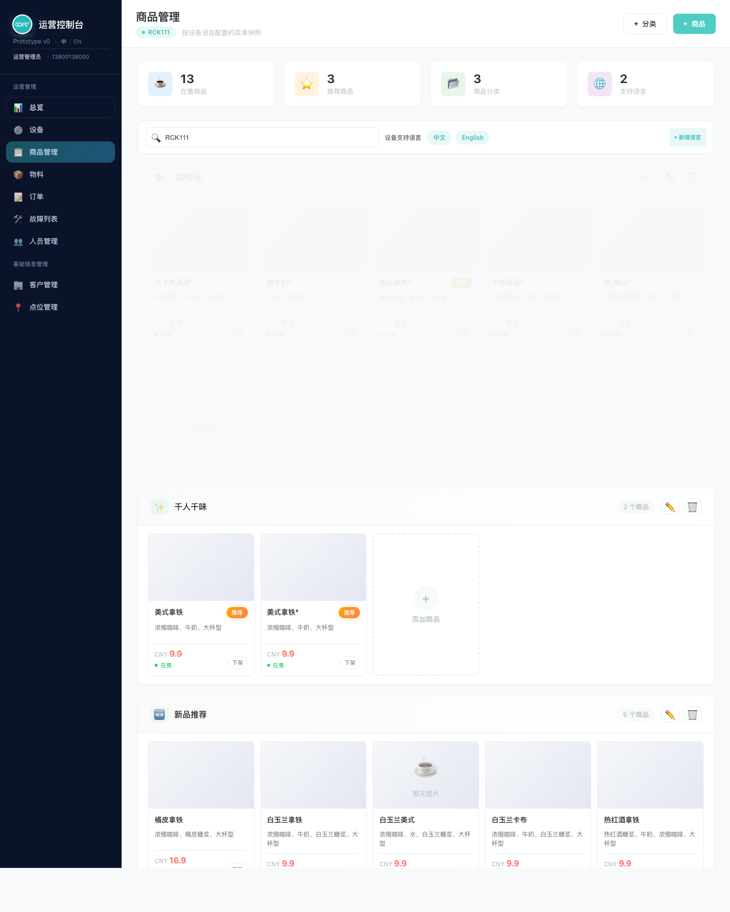
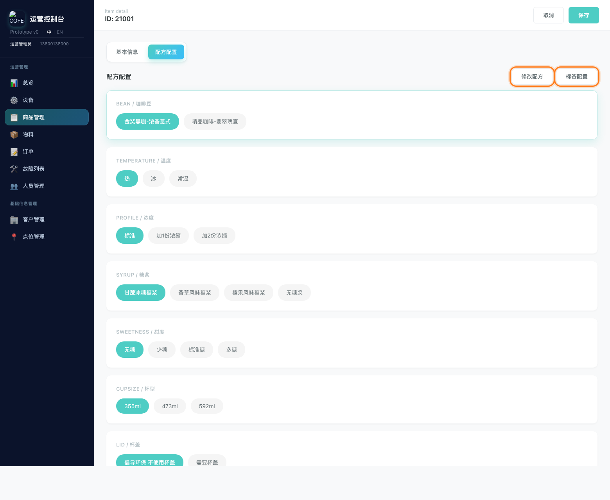
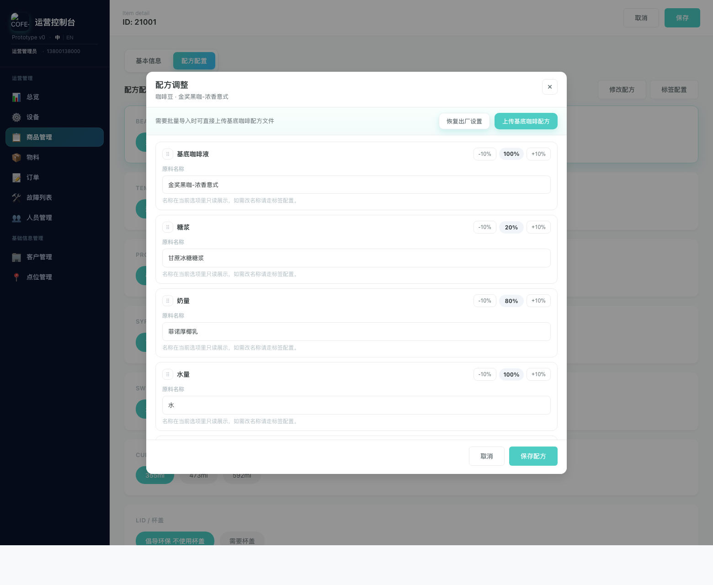
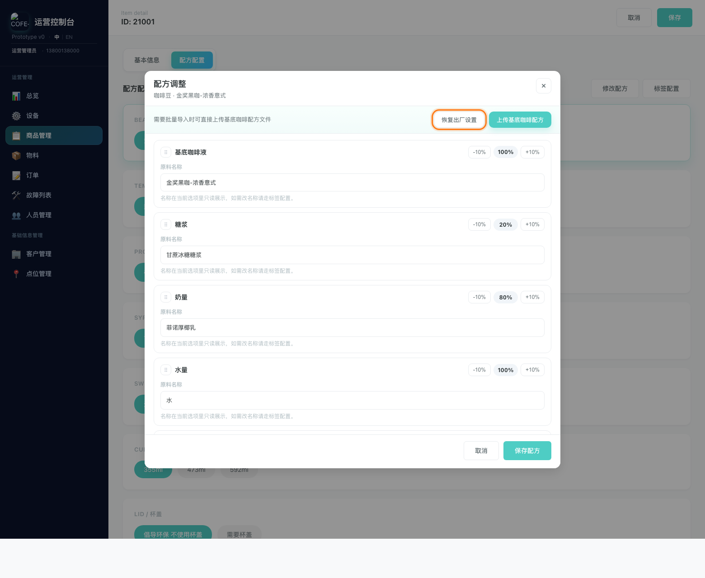
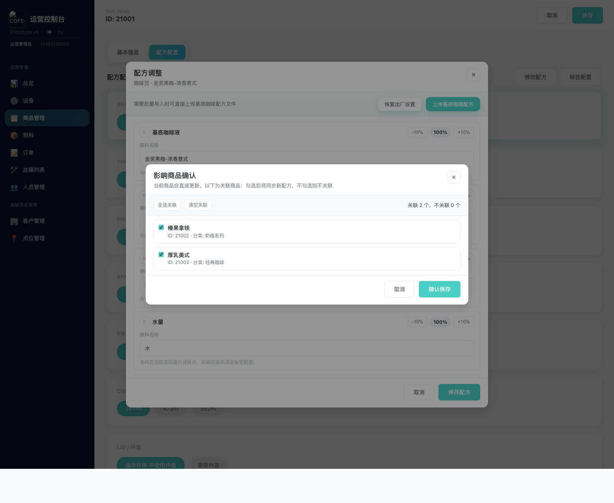

商品详情 · 配方配置
商品配方修改说明
这份文档可以直接发给同事，用来介绍如何从桌面端商品管理首页进入商品编辑，再调整配方并完成保存。
一、先从桌面端商品管理首页进入编辑
- 在左侧导航点击
商品管理。 - 进入页面后，先不要停留在顶部统计卡、设备搜索和语言设置区域。
- 继续往下找到
商品区域 / 商品卡片区域。 - 当前页面没有单独的
编辑按钮，直接点击目标商品卡片进入编辑。
很多人进入
商品管理 后，会停在顶部基础设置区。真正进入商品编辑的入口，在页面下方的商品区域，而且这里没有独立的 编辑 按钮。

这里没有单独的“编辑”按钮，直接点击目标商品卡片进入编辑
二、进入商品详情后切换到配方配置
- 进入商品详情页后，点击上方
配方配置页签。 - 先选中你要调整的选项，例如咖啡豆、温度、糖浆、甜度或杯型。
- 点击右上角的
修改配方。

三、修改配方
进入 配方调整 弹窗后，可以做下面几类操作：
- 通过左侧拖拽手柄调整配方分组顺序。
- 点击每一行右侧的
-10%或+10%调整比例。 - 查看当前原料名称，确认现在的制作内容是否正确。
如果你要改的是前台展示名称，不要在这里处理，应改用
标签配置。这里负责的是机器制作配方。

四、可选操作
如果不是手动微调，而是需要快速恢复或批量导入，也可以直接在弹窗顶部处理：
恢复出厂设置：把当前选项恢复到默认配方。上传基底咖啡配方：用文件批量导入“基底咖啡液”配方。
需要回退到标准配方时，用恢复出厂设置；需要按模板批量导入时，用上传基底咖啡配方。

五、保存并确认影响范围
点击 保存配方 后，系统会弹出 影响商品确认 弹窗。
- 当前商品一定会保存，不需要额外勾选。
- 列表中的商品，是和当前配方有关联的其他商品。
- 默认是全选，表示这些商品也会一起更新为新配方。
- 如果某些商品不想一起改，就取消勾选。
- 最后点击
确认保存。
只想改当前商品时，把关联商品全部取消勾选后再保存；想让一批商品一起更新时，保持勾选直接确认即可。

六、讲解话术
先在左侧打开商品管理。进入页面后不要停在顶部基础设置区，要继续往下找到商品区域。这里没有单独的编辑按钮，直接点击目标商品卡片进入编辑。进到商品详情以后，切到配方配置，再点右上角的修改配方。进弹窗以后，可以拖动顺序，也可以用加减 10% 调整比例。改完点保存配方。最后系统会再问一次哪些关联商品要一起更新，如果你只想改当前商品，就把其他商品取消勾选后再确认保存。
七、注意事项
- 进入
商品管理后，不要停在顶部统计和基础设置区，真正的编辑入口在下方商品区域。 - 当前页面没有单独的
编辑按钮，直接点击商品卡片本身即可进入商品详情。 - 修改前先确认自己选中的到底是哪一个选项组和哪个标签值。
修改配方是改制作规则，不是改前台展示文案。- 取消勾选的关联商品不会跟随本次新配方。
- 如果需要批量导入，优先使用
上传基底咖啡配方，不要逐项手调。